Simple Shaker
Wide strips. Clean lines. A flat capped dado.
Easy with strips cut to width by the supplier. Medium if you cut the sheet into strips yourself.
Hallway views
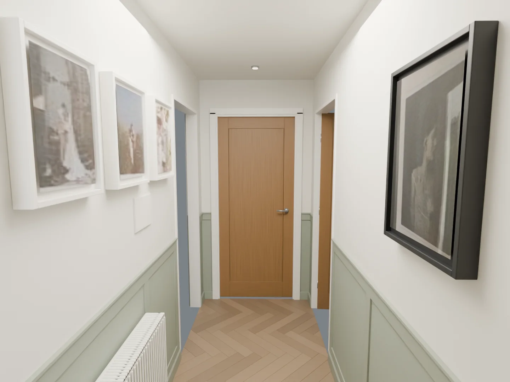
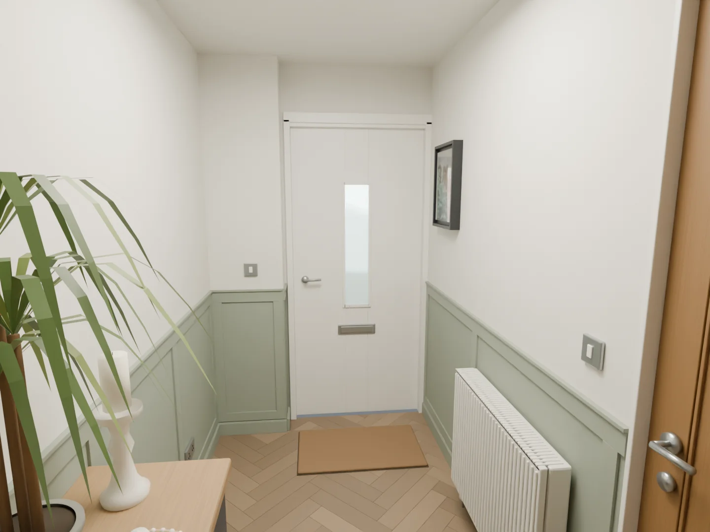
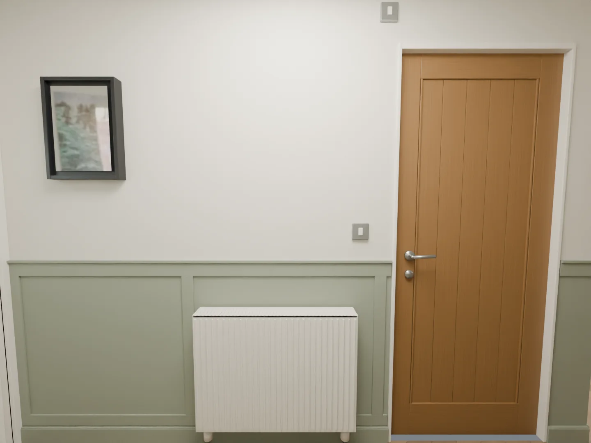
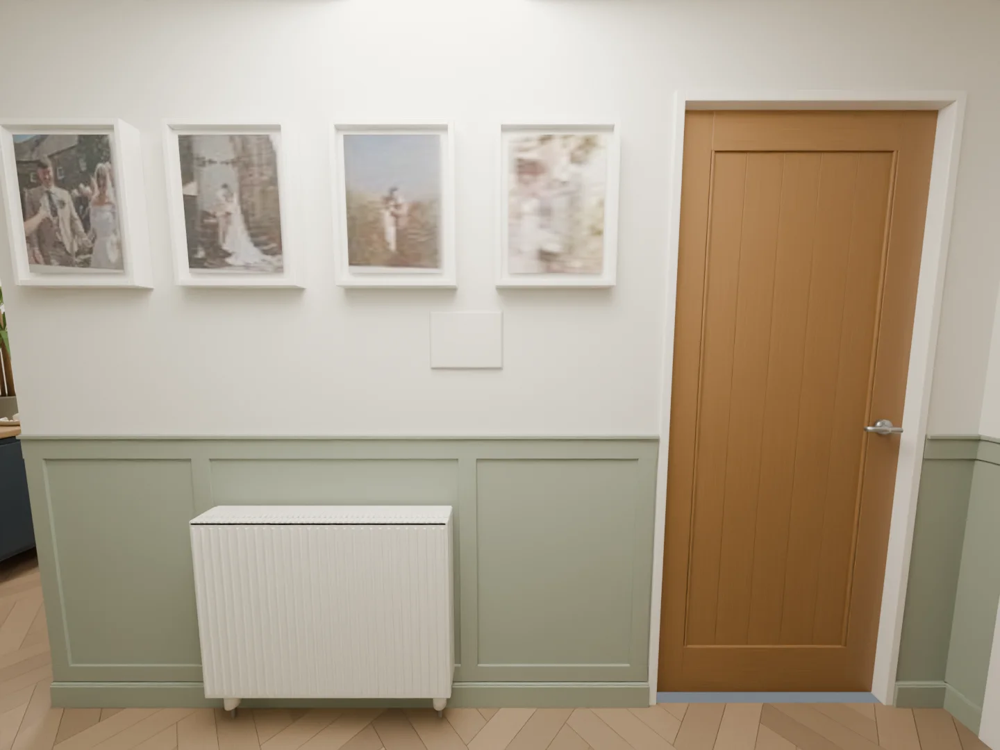
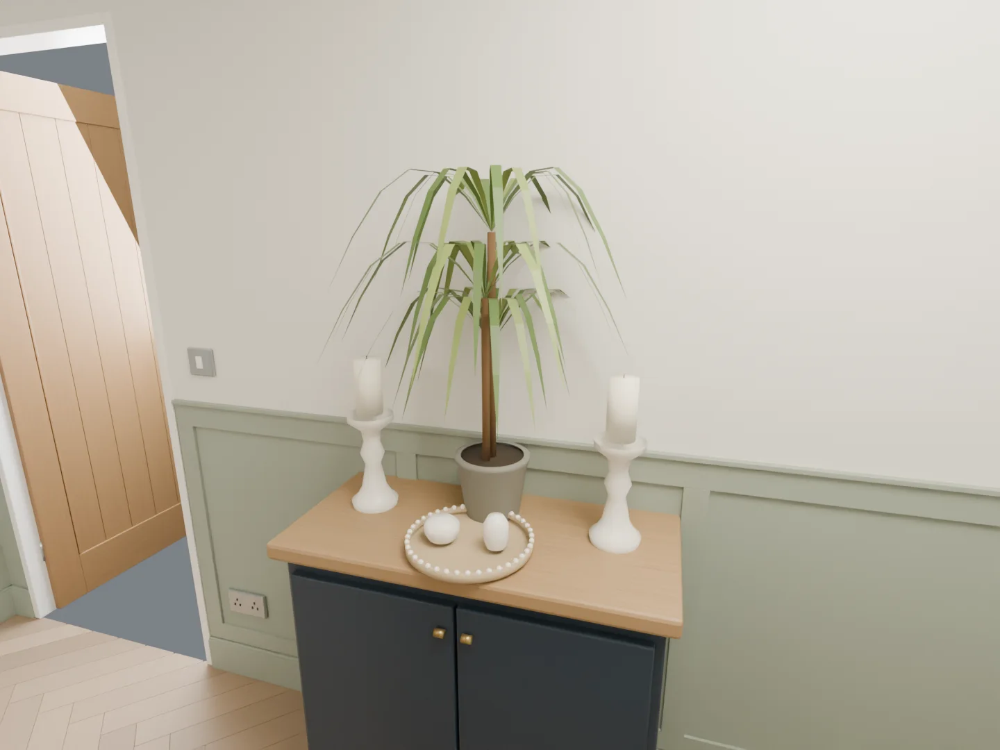
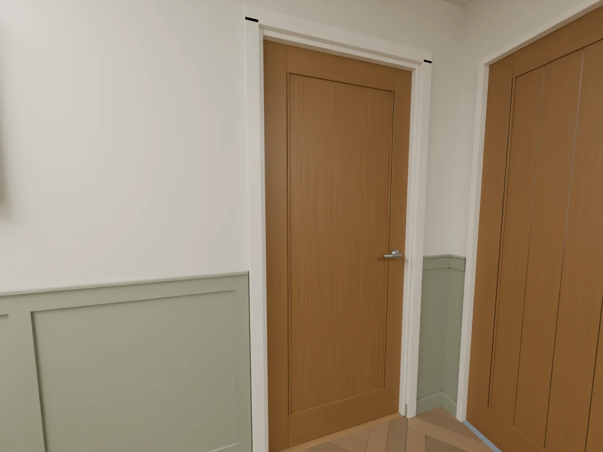
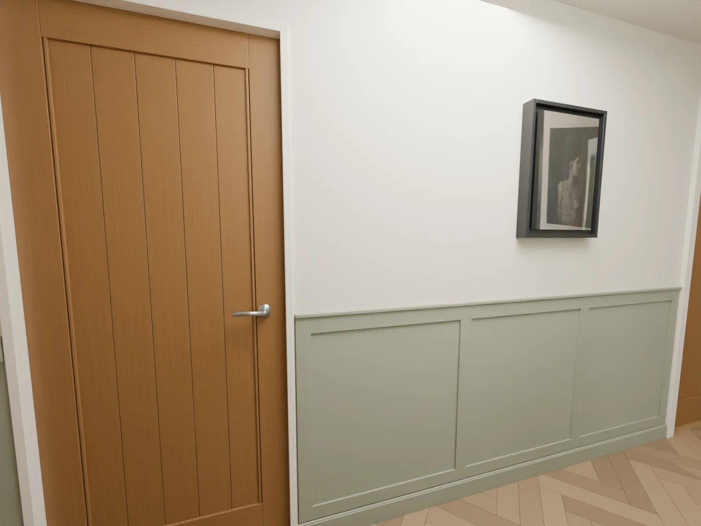
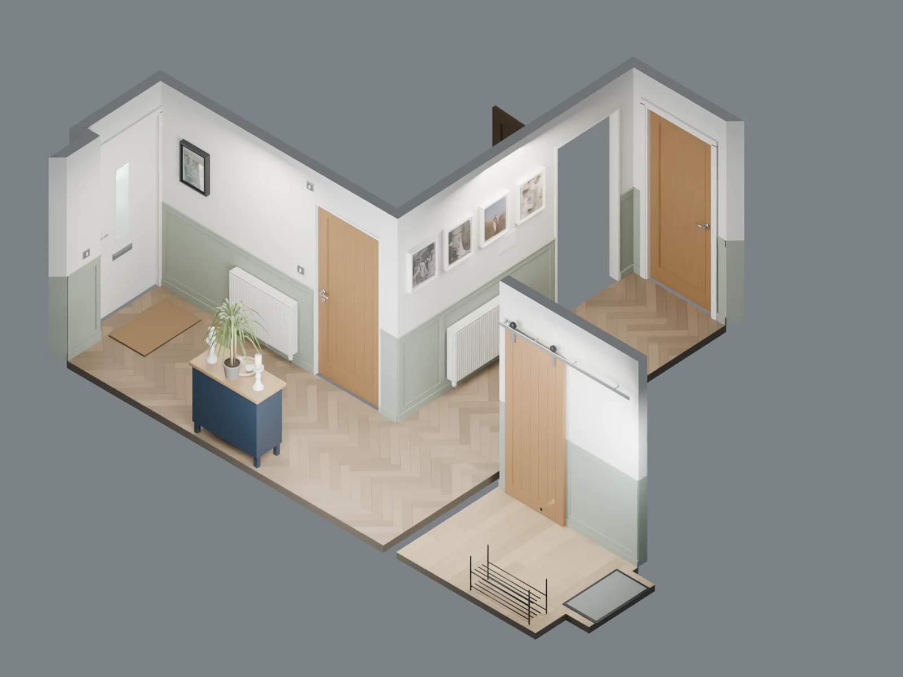
Entrance views
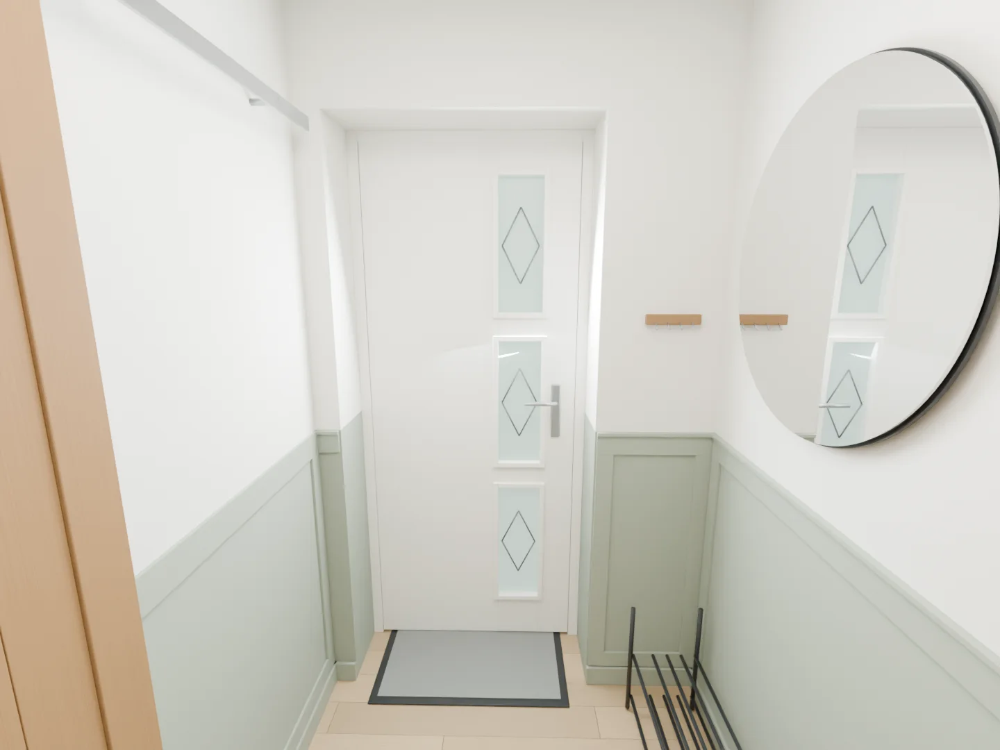
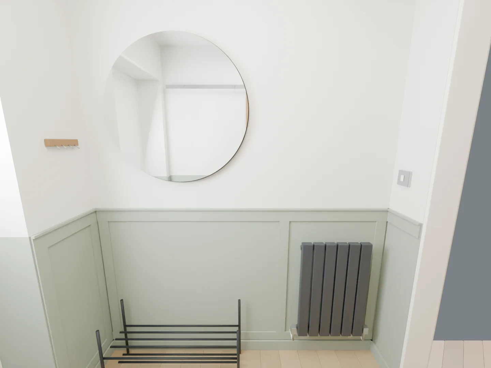
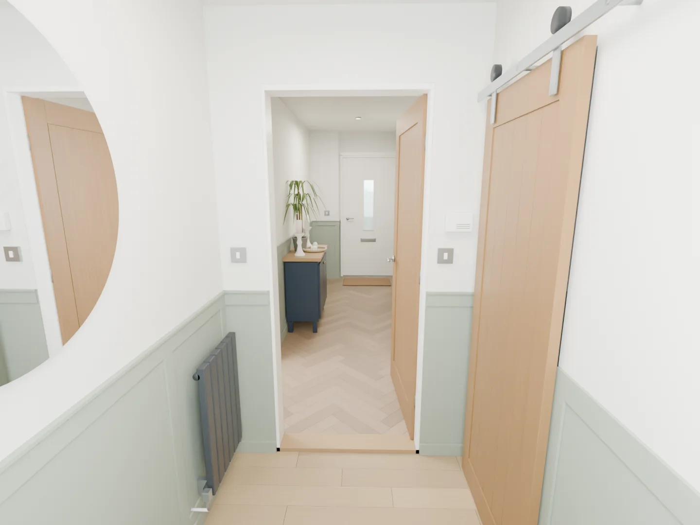
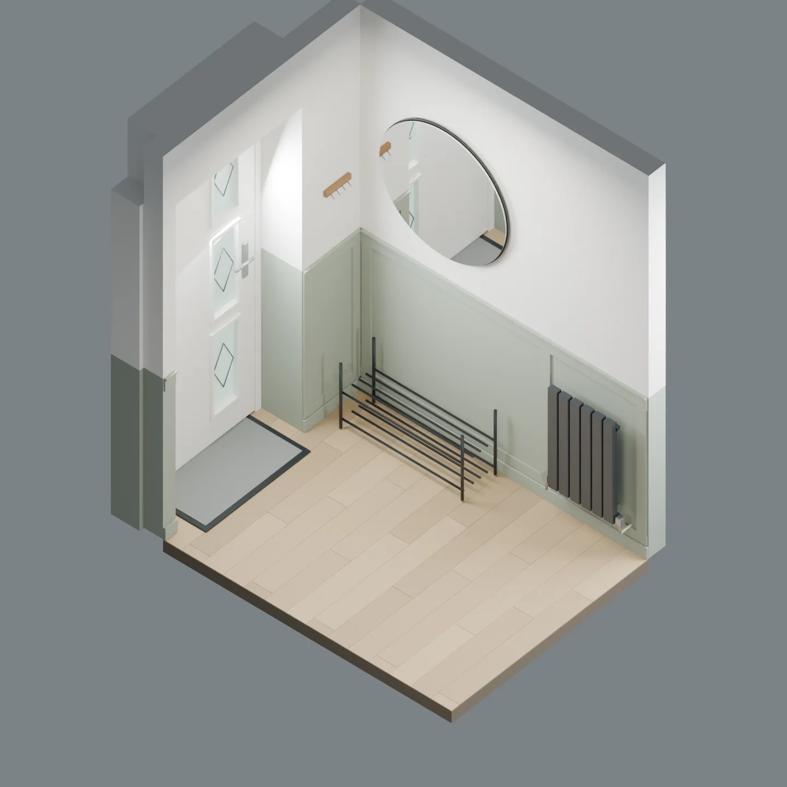

The entrance floor is 25 mm lower. Its 1025 mm dado meets the hallway dado at the same physical height. The connecting wall is 140 mm thick, excluding trim.
What you need
Applied MDF strips form a simple grid on the existing wall. Supplier-cut strips make this the easiest option to build.
| Material / section (mm) | Buy | Allowance |
|---|---|---|
| 9 mm MDF sheet | 2 × 2440 × 1220 mm | 16 strips at 60 mm and 8 at 70 mm wide, including spare strips. |
| Standard cap, 12 high × 18 deep | 8 × 2400 mm lengths | 14.290 m installed; includes one spare length. |
| Barn-wall cap, 12 high × 9 deep | 1 × 2400 mm length | 1.085 m installed. Can be cut from a 9 mm MDF offcut. |
Paint, adhesive and tools
| Supply | Planning allowance |
|---|---|
| Construction adhesive, 290–310 ml | 8–11 cartridges |
| Decorators caulk | 3–4 cartridges |
| Fine filler | 1 small tub |
| MDF / timber primer | 1.5 litres |
| Coloured topcoat, two coats | About 4.1 litres |
| Other supplies | Abrasives, masking tape, dust sheets and suitable temporary fixings |
Coverage depends on the product and wall condition. The paint allowance uses about 17 m², two coats at 10 m² per litre and 20% extra. Use compatible wall and trim finishes. Tools include a tape, level, square, saw, mitre guide, adhesive gun and sanding tools; grooved sheets also need a guided saw and cutout templates.
Lengths and cuts
All dimensions below are in millimetres. Nominal sizes are intended finished sizes before corner details and site variation. Check the wall ends and profile samples before making final cuts.
| Run | Part | Quantity | Length (mm) |
|---|---|---|---|
| W2a | Bottom rail | 1 | 2,000 |
| W2a | Upright | 3 | 763 |
| W3a | Bottom rail | 1 | 2,145 |
| W3a | Upright | 4 | 763 |
| W5b | Bottom rail | 1 | 2,380 |
| W5b | Upright | 4 | 763 |
| W6b | Bottom rail | 1 | 3,120 |
| W6b | Upright | 5 | 763 |
| W7a | Bottom rail | 1 | 460 |
| W7a | Upright | 2 | 763 |
| E1b | Bottom rail | 1 | 950 |
| E1b | Upright | 2 | 803 |
| E2b | Bottom rail | 1 | 420 |
| E2b | Upright | 2 | 803 |
| E3a | Bottom rail | 1 | 1,800 |
| E3a | Upright | 3 | 803 |
25 uprights: 18 in the hallway and 7 in the entrance. The 3120 mm bottom rail is split into two nominal 1560 mm pieces. The radiator-wall counts remain subject to the valve clearance check.
Wall key and all dado lengths 15.375 m total
All three options use these 20 wall-face runs across both rooms. Apply the schedule once for each continuous rail or cap part. W1 is the rear door and has no rail.


| Run | Wall section | Length (mm) |
|---|---|---|
| W2a | Bathroom wall | 2,000 |
| W2b | Bathroom wall | 220 |
| W3a | Wedding-photo wall | 2,145 |
| W3b | Wedding-photo wall | 190 |
| W4a | Storage wall | 107.5 |
| W4b | Storage wall | 107.5 |
| W5a | Entrance and spare-bedroom wall | 190 |
| W5b | Entrance and spare-bedroom wall | 2,380 |
| W5c | Entrance and spare-bedroom wall | 235 |
| W6a | Kitchen and cabinet wall | 110 |
| W6b | Kitchen and cabinet wall | 3,120 |
| W7a | Rear boxing face | 460 |
| W8a | Rear recess return | 180 |
| E1a | Entrance barn wall | 135 |
| E1b | Entrance barn wall | 950 |
| E2a | Entrance front wall | 90 |
| E2b | Entrance front wall | 420 |
| E3a | Entrance mirror wall | 1,800 |
| E4a | Entrance connecting wall | 260 |
| E4b | Entrance connecting wall | 275 |
W4a and W4b assume the 990 mm storage frame is centred in the 1205 mm end wall. The 3120 mm W6b run needs a joint when using 2440 mm stock; allow two 1560 mm nominal pieces.
Stock cutting schedule Rough blanks in mm
These blanks include trimming allowance. They are not the final cut sizes. Keep every piece labelled. The schedule allows 3 mm saw loss per cut.
| Stock / row | Blank labels and lengths (mm) | Left over (mm) |
|---|---|---|
| 1 | W5b-B1: 2,410 | 17 |
| 2 | W3a-B1: 2,175 | 252 |
| 3 | W2a-B1: 2,030 | 397 |
| 4 | E3a-B1: 1,830 + W7a-B1: 490 | 104 |
| 5 | W6b-B1-1: 1,590 + E1b-U1: 833 | 1 |
| 6 | W6b-B1-2: 1,590 + E1b-U2: 833 | 1 |
| 7 | E1b-B1: 980 + E2b-U1: 833 + E2b-B1: 450 | 158 |
| 8 | E2b-U2: 833 + E3a-U1: 833 | 758 |
| 9 | E3a-U2: 833 + E3a-U3: 833 | 758 |
| 10 | W2a-U1: 793 + W2a-U2: 793 + W2a-U3: 793 | 42 |
| 11 | W3a-U1: 793 + W3a-U2: 793 + W3a-U3: 793 | 42 |
| 12 | W3a-U4: 793 + W5b-U1: 793 + W5b-U2: 793 | 42 |
| 13 | W5b-U3: 793 + W5b-U4: 793 + W6b-U1: 793 | 42 |
| 14 | W6b-U2: 793 + W6b-U3: 793 + W6b-U4: 793 | 42 |
| 15 | W6b-U5: 793 + W7a-U1: 793 + W7a-U2: 793 | 42 |
| Stock / row | Blank labels and lengths (mm) | Left over (mm) |
|---|---|---|
| 1 | W5b: 2,410 | 17 |
| 2 | W3a: 2,175 + W3b: 220 | 29 |
| 3 | W2a: 2,030 + E4b: 305 | 89 |
| 4 | E3a: 1,830 + W7a: 490 | 104 |
| 5 | W6b-1: 1,590 + E2b: 450 + E4a: 290 | 91 |
| 6 | W6b-2: 1,590 + W5c: 265 + W2b: 250 + W5a: 220 | 93 |
| 7 | E1b: 980 + W8a: 210 + E1a: 165 + W6a: 140 + W4a: 138 + W4b: 138 + E2a: 120 | 518 |
| Stock / row | Blank labels and lengths (mm) | Left over (mm) |
|---|---|---|
| 1 | W5b: 2,390 | 2 |
| 2 | W3a: 2,155 + W2b: 230 | 4 |
| 3 | W2a: 2,010 + E4b: 285 | 94 |
| 4 | E3a: 1,810 + W7a: 470 + E2a: 100 | 6 |
| 5 | W6b-1: 1,570 + E2b: 430 + E4a: 270 | 116 |
| 6 | W6b-2: 1,570 + W5c: 245 + W3b: 200 + W5a: 200 + W6a: 120 | 45 |
| 7 | W8a: 190 + W4a: 118 + W4b: 118 | 1,960 |
| Stock / row | Blank labels and lengths (mm) | Left over (mm) |
|---|---|---|
| 1 | E1b: 980 + E1a: 165 | 1,239 |
Linear MDF and mould blanks allow 30 mm extra per piece and 10 mm stock-end trimming. The 2400 mm cap schedule allows 10 mm extra per piece and only 5 mm stock-end trimming. Check stock lengths first and use the spare if needed. Corner projections and actual wall angles set the final end cuts.
Fit it to the room
- The existing wall forms the centre of each panel; no backing sheet is needed.
- Hallway: bottom rail starts at 95 mm, top rail at 918 mm. Entrance: bottom rail starts at 80 mm, top rail at 943 mm. Both top rails are 70 mm high, with a 12 mm cap above.
- Use a 9 mm-deep cap on E1 beside the barn door. Standard caps elsewhere are 18 mm deep. Fit a neat transition at the corners.
- Bottom rails are full material allowances. Split or omit them around pipes. Check upright positions against valves and brackets.
- Use square butt joints for the grid. Check actual corner angles before cutting the cap ends.